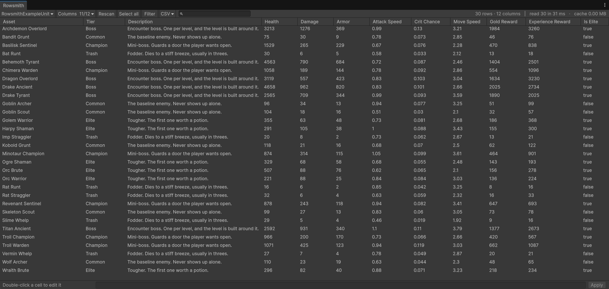

Matthsanz — editor tools for Unity
Rowsmith
ScriptableObject spreadsheet editor
Changing the same field on three hundred assets is the kind of job the Inspector does one at a time, and a script does without showing you anything. Rowsmith sits between the two: it shows you the whole list of what will change — with a real example, taken from your own data — before the first file is written.
See Rowsmith →
How I work
- A published number is a measured number. No speed quoted here is an estimate.
- No network. No telemetry, no account, no activation.
- Editor only. Nothing is compiled into your game.
- Nothing changes your files without showing you first what will change.
Contact
Expect a reply within 24–48 hours. What to send with it →